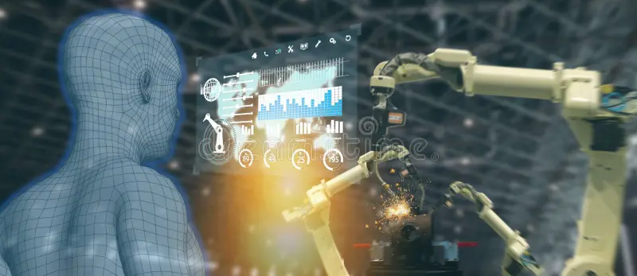

Inteligência Artificial são Sistemas de computadores programados para simular a capacidade humana de raciocinar, aprender, resolver problemas e tomar decisões. Por que se tornou importante: O volume de dados gerados cresceu exponencialmente. A IA consegue processar essas informações em segundos, trazendo eficiência, precisão e automação sem precedentes. Onde encontramos IA atualmente: Em smartphones, plataformas de streaming, redes sociais, ferramentas de busca, sistemas bancários, hospitais e veículos autônomos.
As empresas utilizam IA Para analisar grandes volumes de dados (Big Data), mapear comportamentos de clientes e personalizar produtos e atendimentos. Automação de tarefas: Execução automática de rotinas repetitivas, como preenchimento de planilhas, triagem de e-mails e atendimento inicial via chatbots. Aumento de produtividade: Permite que funcionários foquem em tarefas estratégicas e criativas enquanto a máquina cuida da parte operacional. Mudanças nas profissões: Redução de cargos puramente operacionais e aumento na demanda por profissionais com habilidades em análise de dados, programação, ética em tecnologia e pensamento crítico.
Tecnologia (Programação e Desenvolvimento): A IA gera trechos de código, identifica bugs automaticamente e acelera a criação de novos softwares.
Medicina (Diagnósticos e Exames): Algoritmos analisam exames de imagem com alta precisão para detecção precoce de doenças e auxiliam na pesquisa de novos medicamentos.
Indústria (Robôs e Automação): Braços robóticos inteligentes gerenciam linhas de montagem, preveem falhas em máquinas e otimizam a produção em massa.

Assistentes virtuais: Siri, Alexa e Google Assistente que respondem comandos de voz e organizam tarefas diárias.
Recomendações de conteúdo: Algoritmos da Netflix, Spotify e TikTok que sugerem filmes, músicas e vídeos com base no seu histórico.
Aplicativos: GPS como Waze e Google Maps calculando rotas mais rápidas em tempo real.
Reconhecimento facial: Desbloqueio de celulares e validação de segurança em aplicativos bancários.
Sistemas de busca: Mecanismos como o Google que entendem intenções de pesquisa para entregar resultados mais precisos.
Em 10 a 20 anos, o mercado de trabalho não será focado em substituir o ser humano, mas em integrar humanos e IA de forma colaborativa. Profissões mecânicas serão totalmente automatizadas, enquanto soft skills (criatividade, empatia, inteligência emocional e liderança) se tornarão o maior diferencial no mercado. A capacidade de aprender continuamente (lifelong learning) será a principal competência exigida.
A IA não é uma promessa futura; ela já está integrada às estruturas de mercado atuais.
Diversas profissões estão passando por transformações e redefinições de escopo.
O surgimento de novas áreas compensará a extinção de tarefas obsoletas.
O sucesso do profissional do futuro dependerá diretamente de sua habilidade de dominar a tecnologia e utilizá-la a seu favor.